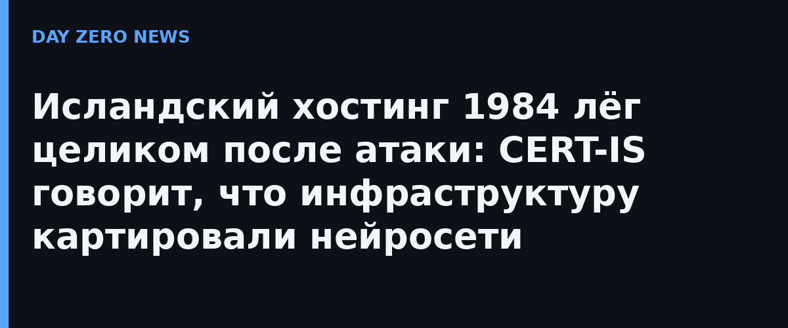

В пятницу 20 ноября около 11:00 UTC компания 1984 ehf опубликовала совместное заявление с CERT-IS — национальным центром реагирования на киберинциденты Исландии. Формулировка жёсткая: «масштабная и серьёзная атака на ИТ-инфраструктуру», атака хорошо организованная и технически грамотная, скоуп ещё расследуется, и нельзя исключить, что затронуто больше систем, чем подтверждено. Чтобы ограничить ущерб, принято решение полностью остановить все сервисы: веб-хостинг, VPS, дашборды, git. Под частичным мониторингом возвращают только почту и DNS. Даты восстановления нет. Публичная статус-страница и сейчас показывает 0% доступности основного сервиса, дашбордов и git. Для компании, основанной в 2006 году энтузиастами свободных программ и обслуживающей более 107 тысяч пользователей, это первая авария такого уровня.
Управляющий директор 1984 Мёрдур Аслаугарсон в интервью RÚV сказал, что его компания — вероятно, крупнейший хостинг сайтов и почты в Исландии, и что атака шла по фронтлайн-сервисам, развиваясь быстрее всего, что он слышал: «Это профессионалы, и это очень хорошо финансированная атака», — оценив расходы атакующих на нейросети в десятки миллионов (валюту он не назвал). Глава CERT-IS Магни Р. Сигурдссон добавил: ИИ «очевидно применялся» для картирования инфраструктуры 1984. При этом в официальном заявлении нет ни слова о том, как атакующие попали внутрь и украдены ли данные клиентов — сайты, почтовые ящики, диски VPS.
Оператор Monero-обменника Wagyu в post-mortem'е обвинил 1984: по его словам, ключ от его кошелька лежал на «удалённом» сервере у хостинга, и в тот же день с этим ключом увели токенов XMR1 на 13,5 млн долларов — цена токена обвалилась с ~500 до ~1 доллара за полчаса. Официально 1984 ничего про Wagyu и утечку данных не подтверждает, а аналитики Bitquery отмечают, что одних ончейн-данных для доказательства кражи ключа недостаточно. Но сам факт тревожный: 1984 рекламирует политику полного отказа от логов, и если с «удалённого» сервера что-то подняли — это удар по самой репутационной основе сервиса. Связь с нашумевшим взломом Contabo неделей ранее не установлена.
Пока 1984 не сказала, до чего дотянулись атакующие, всё, что когда-либо лежало на её серверах, надо считать скомпрометированным. Практический чек-лист: ротировать SSH-ключи, API-ключи, пароли баз, токены в .env и — обязательно — ключи с серверов, которые вы уже «удалили» (хостинги хранят файлы и образы после удаления); менять пароль аккаунта хостинга сразу, как вернётся дашборд; ждать волны фишинга под видом «уведомления о безопасности от 1984»; критичным доменам добавить второго DNS-провайдера (бесплатный FreeDNS от 1984 сидит на тех же неймсерверах); при наличии офсайт-бэкапов — временно уехать, не дожидаясь. Если на вашем сайте чужие персональные данные, инцидент хоста может стать и вашим сообщением в надзорный орган: по GDPR на это 72 часа с момента, когда вы узнали.